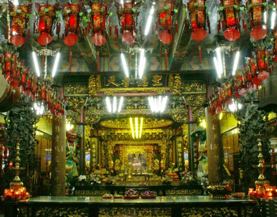
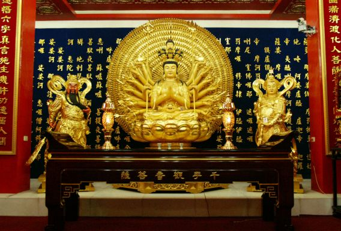
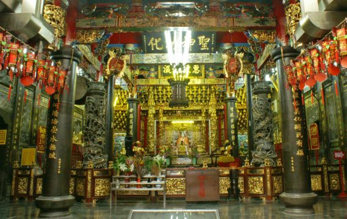
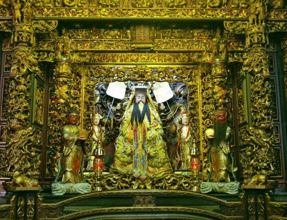

求姻緣 · 林忠毅 求光明 · 林忠二 消災祭解補運 · 林忠三 安太歲 · 林忠四 光明燈 · 林忠五
歡迎日本東京都杉並區渡邊課長、大下次長、佐佐木主事、林默章先生𦲷臨本宮參拜，勘察114年來台表演場地、路線。期待明天4月份精彩的阿波踴舞、於板橋再度登場。
員林福寧宮林主委献鐘曁震興宮福德祠張主委明揚暨執事人員，恭迎神尊𦲷臨本宮參訪圓滿回鑾，祈求平安、喜楽、宮誼永固、香火鼎盛。
吳祭典召集人聰榮曁監察、誦經生蒞臨基隆天顯宮、参加伍顯大帝聖誕祝壽大典圓滿。祝香火鼎盛、宮誼永存。
板橋慈惠宮媽祖廟位於新北市板橋區府中路八十一號，本宮正座落板橋區中心的繁榮地區。

本宮一樓正殿主祀天上聖母【板橋媽】，金龕前陪祀中壇元帥聖像，殿前有全省最高【一丈】的木雕神像【千里眼】【順風耳】護駕。偏殿【財神殿】供奉文財神比干及五路財神，【千歲殿】供奉五府千歲、五年千歲。

一樓太歲殿內主祀斗姥元君及六十甲子太歲星君、兩側洞明、隱光護法。圓通殿供奉九尺九座姿攝化地獄界的【千手千眼觀世音菩薩】兩側護法神【韋馱尊者】【伽藍尊者】。
虎邊供奉七尺一立姿【月老公】又稱【月下老人】，龍邊供奉魁斗星君又稱【魁星爺】為五文昌之一。

二樓正殿主祀【鎮殿媽祖】、【開基媽祖】神案處陪祀有釋迦摩尼佛、藥師琉璃光佛、阿彌佗佛尊稱【三寶佛】，偏殿供奉【觀世音菩薩】、【地藏王菩薩】。二樓右廂【功德堂】供奉本宮歷代主持師父及有功德先賢、金浦會七十二賢士。【虎爺殿】位於二樓，右邊供奉威武型石雕、木雕、陶塑虎爺。【三界公殿】主祀天官、地官、水官三官大帝。偏殿供奉南無才光明佛、龕前石雕佛像為同治年間古物。偏殿供奉註生娘娘及百年雕像臨水夫人陳靖姑。光明殿內主祀湄洲三聖媽祖、文昌帝君、關聖帝君。

三樓【凌霄寶殿】主祀玉皇上帝其座前配祀有太陽星君、太陰娘娘並有南斗星君及北斗星君為輔。
本宮在慈惠大樓四樓為莘莘學子設立圖書館、閱覽室及Ｋ書中心嘉惠學子們，努力向學提昇人文風氣。並在服務台處供奉一尊5尺7寸高【至聖先師】孔子之金身聖像，以提醒學子【尊師重道】至此本宮真是【儒】【釋】【道】三教歸宗的聖地。
本宮於九十八年百變媽祖會香板橋，九十九年媽祖平安遊板橋來逗陣，連續兩年與台北縣政府、市公所共同舉辦【台北縣媽祖文化節】百年來板橋最盛大遶境活動，盛況空前，深入體驗傳統廟會文化，讓新北市媽祖信仰力量更為凝聚，社會更加和諧。
慈惠宮媽祖廟位於新北市板橋區鬧區，是舊擺接堡十七大庄的媽祖信仰中心，與枋橋街文昌廟（今板橋區）、枋橋街接雲寺（今板橋區）、枋寮廣濟宮（今中和區）及大安寮庄大墓公（今土城區）等寺廟合稱擺接堡五大廟。
民國六十四年，板橋市實施舊市區更新方案，整修市容觀瞻，本宮位於府中路之部份建築遭拆除，管理人朱茂陽即策劃全面修建事宜，並組織修建委員會，推選本市留候里里長劉屘先生擔任修建會主任委員，此次改建共增建了二層媽祖殿及後殿二層之三界公殿和頂層之凌霄寶殿，於民國六十四年十二月十五日開工，至民國七十三年十一月二十日次第完工，共歷時十載，完成三層樓式廟構完整新殿宇，金碧輝煌，巍巍常屹，悠悠煙祀常被鯤北。
然後按下